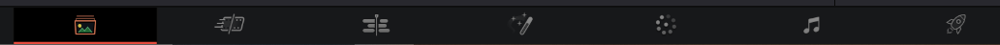

达芬奇的界面和底部板块高度绑定，而底部板块是是整个工作流程的各个主要阶段，从左到右依次为：

浏览查看素材。从左上到右下分别为：
媒体浏览器：导入素材、创建时间线（序列）
素材监视器：浏览、播放素材
媒体池：存放准备剪辑的素材
可创建文件夹进行素材分类
素材数据：查看媒体数据
快速剪辑界面，适合视频的粗剪
省掉了大部分的剪辑面板的东西，带来了一条巨大的时间线，以及一条时间线缩略图
左上角为媒体池、转场、特效等按钮的集合
监视器左上角有三种浏览方式，其中“源磁带”比较特殊。激活后，播放时将逐个播放素材库里的素材，一个接一个。与此同时也可直接打下IO出入点。在大量素材迅速提取有用信息时非常高效
一般的剪辑界面，也是最常用的剪辑界面
左上角：资源集合，包含媒体池、特效库等，可直接拖动媒体池的素材到时间线上。也可以先预览这段素材，用I、O键打下出入点，然后再拖动到时间线上，就只会将出入点之内的素材加入时间线
右上角：检查器面板，类似于PR的控制面板。和PR一样的打关键帧操作，不过在时间线的视频片段上会出现小菱形，点击可拖动关键帧位置。菱形旁边的曲线按钮，能快速调整线性与非线性动画
左下角：常用素材，例如转场、字幕等
下方：剪辑时间轴
时间轴上方是常用的工具，从左到右依次为：
选择模式A
修建编辑模式T
动态修建模式W：一般不建议开，开了之后，播放素材时会自动跳回前面，一般用于对素材某一部分进行精剪
剃刀工具B：将视频进行剪切
插入片段：选中左上角的素材后，在时间标所在的地方插入片段，后面的素材将后移。如果时间标在某段素材中间，将会把素材分割并插入片段
覆盖片段：将覆盖从时间标开始直到新素材结束的这一段原素材序列，后面的素材不会移动
替换片段：将时间标所在的素材分割，并用新素材替换后半段旧素材。如果新素材过长，则只保留和后半段旧素材相同长度的前面部分
磁铁工具：素材的移动，会自动吸附。一般打开
音视频链接：若关闭，则移动视频（音频）的移动不会影响音频（视频）的位置。一般打开
若音视频已经断开，则需要选中它们并右键--连接片段
位置锁定：锁定某段素材后，将不能在时间线上移动
旗标：标记选中的素材，若素材被切断，则两段新素材都有旗标。双击旗标可添加备注
标记：标记时间标所在的素材位置，双击标记可添加备注
添加节点
进行调色
中间为素材监视区，右边为每个片段的节点，左边为抓取的静止帧，中间一行为视频素材，下方为调色工具
视频素材，按序号进行排列，若已调色则序号变成彩色，每个素材右上角为所在轨道，下面是编码格式
四个色轮分别调整：暗部、中间调、亮部、偏移（全局）
色圈可以调整画面的色调，下面的齿轮调整画面的明度
示波器：帮助我们界定了画面明暗的范围、RGB的亮度等。示波器是绝对准确的，屏幕、眼睛等都可能会偏色什么的
在上方的工作区-视频示波器，即可打开示波器
波形图的底部代表纯黑，顶部代表纯白，横轴就是视频的横向
调色时，让暗部不完全接触底部，也就是不是纯黑，而亮部不超过95%的亮度，即不是白色
如果RGB三个波是分开的，就相当于画面存在偏色，需要调整白平衡，让三种颜色在波形图中汇聚
矢量图：呈现出画面的色相和饱和度信息
进行视频的音频处理
最终导出面板
第一次使用达芬奇，首先需要：点击右上角的Davinci resolve--偏好设置--用户--项目的保存与加载--勾选：实时保存和备份，防止发生意外
新建项目后，需要先对项目进行设置，尤其是设置目标帧率。一旦导入素材，帧率便不能再更改
大部分快捷键都和PR一致，但是有如下不同：
B：切断视频，而PR是c键
alt+shift+c：自动调色
alt+s：在调色区，新建一个串行节点
alt+p：在调色区，新建一个并行节点
alt+L：图层节点
shift+H：突出显示，在抠像、区域调色的时候可只显示这一部分的效果，方便查看效果
鼠标中键：调色界面点击素材之后，会复制素材的调色参数，可复制给其他素材
其他快捷操作：
复制某个片段--选中需要的片段--右键--粘贴属性，可快速批处理
项目设置--图像缩放调整--设置裁切：调整到全帧并裁切掉多余部分，即可快速去掉不同比例素材的黑边
动态缩放功能：在检查器打开后，可迅速做出缩放功能，且可在视频监视器左下角下拉菜单里点击动态缩放，会出现一个绿框框，表示开始展示的画面，而红框表示结束画面
编辑--删除空隙
画面左下角，一个窗口的图标，在其中选择堆叠时间线，再在右侧新建一个时间线，此时可在第一个时间线上筛选片段，然后拖动到第二条时间线，而在第二条时间线的改动不会影响第一条时间线的素材，非常适合快速处理大量素材并做成视频
在剪辑面板：变速：选中片段右键--变速控制，此时这个片段下面就会出现片段控制的倒三角形，点击添加速度点（关键帧）即可更改速度，速度控制线，下方是控制速度出入点，上方是控制片段的速度。右键打开变速曲线，选中某个点把它变成非线性即可
PR和达芬奇的联动：剪辑完成之后，在文件--导出--选择finalcut xml即可，随后打开达芬奇，确保项目设置都是正确的，接着导入xml
稳定素材：调色板块，中间一行的工具中，找到追踪器，在下面几个小图标中找到稳定器，即可稳定
使用该效果可能会出现果冻效应。。。合理使用
磨皮功能（付费版）：调色面板--特效库--面部修饰，即可自动进行面部跟踪，此时可直接调整这个效果的参数，进行磨皮
在处理片段的时候，使用更小、分辨率更低、效率更高的文件代替原视频，而在导出的时候，将这些调整加到原视频即可
一般先更改设置：文件--项目设置--主设置，把代理设置小一点，且更改文件的位置防止爆C盘
选中媒体库或时间线上的素材，右键--生成优化媒体
可预渲染视频：播放--渲染缓存--用户定义。此时若需渲染某个或多个片段，则选中并右键--渲染调色/Fusion输出，即可。也可以直接选择智能，让他自己自动渲染
和 Pr 大部分都是类似的
静态关键帧：是”突变“的，即此关键帧之前的画面，和上一关键帧是完全一致的，不会自动过渡
如一个物体原本在A点，在某一帧突然跳转到B点
动态关键帧：类似Pr默认的关键帧，即两关键帧之间，若参数不一样，则它们之间的帧会自动进行变化
如一个物体会平滑地从A移动到B点
是一种非破坏性调整的方法，功能上类似于Blender的修改器，操作形式上类似于Blender和UE的节点
节点下方会显示它所包含的效果，非常直观
右键节点--节点标签：可添加节点说明等，方便处理
每个节点的参数都是独立的，即每个新节点的所有参数都会复位，但之前的节点仍会产生效果
可拖动端点进行节点之间的连接
主要有以下三种节点
串行节点：alt+s：新建一个串行节点
节点之间是有顺序的，先前的节点会先对图像进行调整，后面的节点在前面节点的基础上再一步调整，整体类似于图层
串行节点容易引发多米诺骨牌效应，比如在后面的节点，按颜色抠像，但又在前面调整了画面，则也会影响到后面的抠像
并行节点：从一个源头（节点）分出了两条甚至多条支流（节点），alt+p：新建一个并行节点
通常用来进行区域调整或抠像
节点之间没有层级关系
图层节点：是并行节点之后的一个汇合节点，可以控制并行节点之间的混合模式，此时并行图层就相当于图层
快捷键：alt+L
进入图层节点越下面的节点，将在图层的上方（下面的层级比上面的高，而PS相反）
对 LUT 的解释，见摄影-相机和镜头板块
导入LUT：点击文件--项目设置--色彩管理：查找表，打开LUT文件夹，把从网上下载的、合适的LUT文件复制进去，随后更新列表
预览LUT：调色板块，在右上角有个LUT库，可快速预览LUT的效果，注意：比较吃性能
使用LUT：一般在调色的节点处使用：右键节点，选择LUT，从中选择适合视频的LUT文件即可，也可以直接从左侧的LUT库拖动到节点上
降低LUT的浓度：调色板块，中间一行的选项中，有个“键”面板，拉低键输出即可降低LUT浓度
有的时候，套用LUT后会出现一些奇怪的噪点或断层，可在项目设置--色彩管理中，把三线性改成四面体，会有好转
使用Alpha 7R2拍摄的SLog2视频，在套用LUT时最好选则自己从官网下的，达芬奇18自带的Slog2 to rec709并不好用，饱和度有点不够
对整体画面进行一个调整
对某一部分或者某一个单独的颜色进行调整
一般会在并行节点中进行
经常会遇到抠像、跟踪等问题，通常在一级调色之后
曲线二级调色：点击即可创建点，用于标识选区，也可直接在画面上进行点击，会自动调用吸管工具选择选区
在调色面板--中间的工具栏--曲线可找到这些曲线工具
色相对色相（XY轴均为色相）：调整某颜色区域的曲线，只会对某颜色的色相产生影响
色相对饱和度（X轴色相Y轴饱和度）：可单独调整某种颜色的饱和度
亮度对饱和度
其他曲线
方法一：剪辑面板：工具箱--标题--文本（不是Text+），确定好文本的位置后，以后的文本直接复制这个文本然后改文字就行了
方法二：新建字幕轨道，然后一段段加字幕
注意：导出时必须在字幕设置中导出字幕，格式为烧录到视频中
PS：视频后缀名改为m4v可防止微信二次压缩